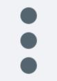

<div id="sideBar">

    <div id="row1">
        
        <div id="sideBarHeader">
            <div class="profilePic">
                
            </div>
    
            <div class="actionItem">
                
                
                
            </div>
        </div>

        <div id="searchBox">
            
            <input type="text" id="searchBar" placeholder="Search or start new chat">
        </div>

    </div>
    
    <div id="sideBarContent">
        <div class="conversion" 
            *ngFor="let chat of recentChat" 
            (click)="recentChatClicked.emit(chat)">
            
            <div class="conversionPic">
                
            </div>

            <div class="conversionDetails">
                <div class="detailsUpper">
                    <div class="detailsName" >{{chat.name}}</div>
                    <div class="detailsTime">{{chat.time}}</div>
                </div>

                <div class="detailsLower">
                    
                    
                    {{chat.lastMessage}}
                </div>
            </div>
        </div>
    </div>
    
</div>